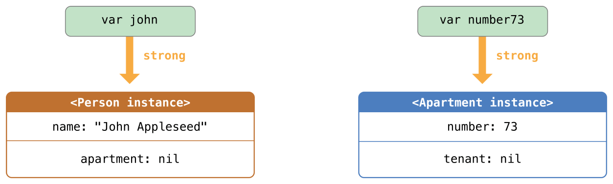
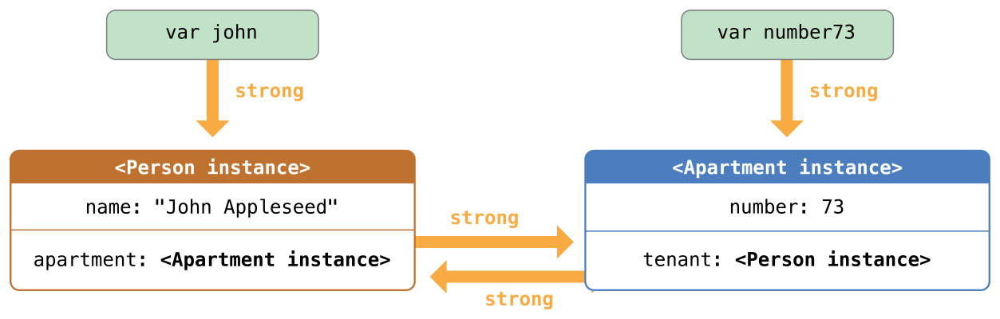
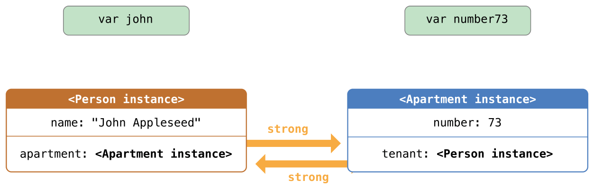
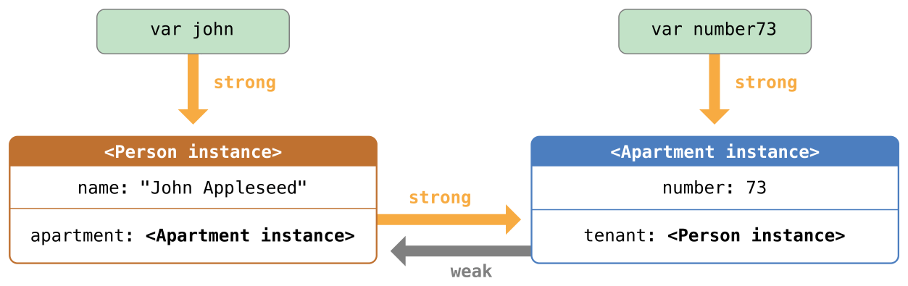
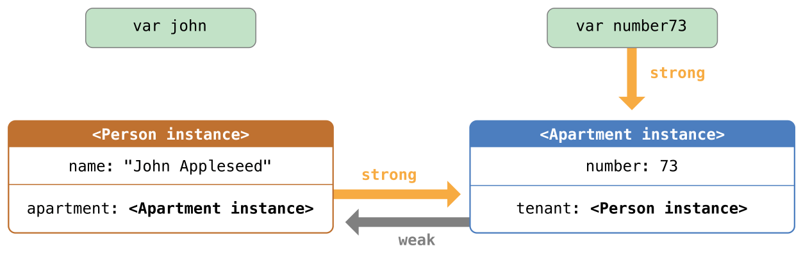
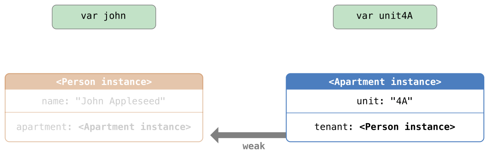
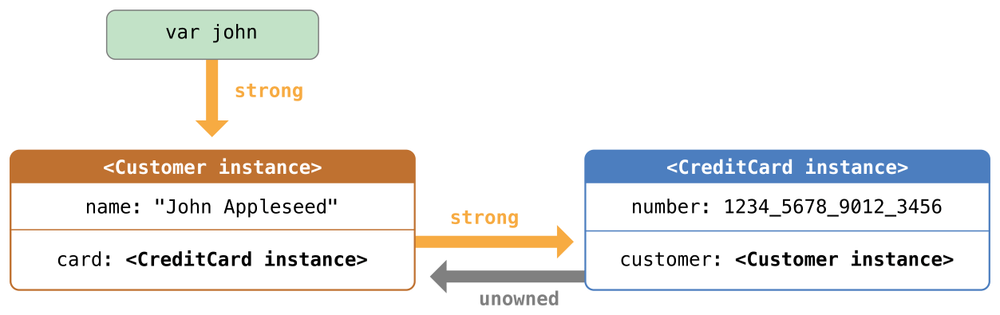
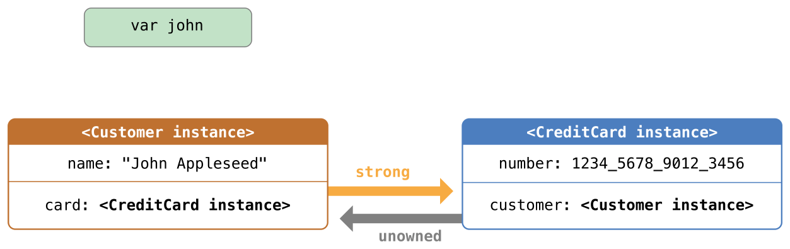
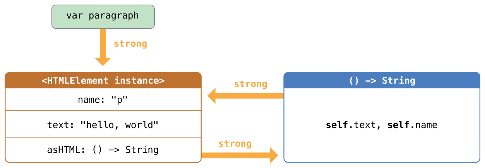
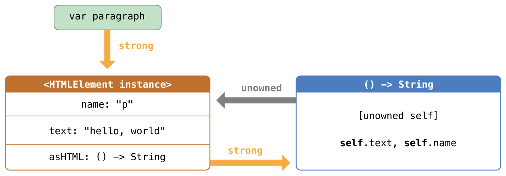

前言
Swift 使用 ARC(Automatic Reference Counting) 这一机制来跟踪和管理程序的内存使用状况。通常情况我们并不需要去考虑内存的管理，ARC 机制会一直起作用，确保类的实例不再被使用时，可以自动释放其所占的内存。
ARC只会对引用类型起作用，结构体(Struct)和枚举类型(enum)是值类型，不是引用类型，也不是通过引用的方式存储和传递。
然而在少数情况下，ARC 需要我们提供更多的代码之间的信息来更好的管理内存，这篇文章则主要关注这些少数情况。
ARC 的工作机制
当我们每次创建一个类的新的实例的时候，ARC 会分配一大块内存用来储存实例的信息。内存中会包含实例的类型信息，以及这个实例所有相关属性的值。此外，当实例不再被使用时，ARC 释放实例所占用的内存，并让释放的内存能挪作他用。这确保了不再被使用的实例，不会一直占用内存空间。
如果我们尝试访问一个已经被销毁的类的实例，则会引起程序的崩溃，为了确保使用中的实例不会被销毁，ARC 会跟踪和计算每一个实例正在被多少属性，常量和变量所引用。哪怕实例的引用数为一，ARC都不会销毁这个实例。
为了使之成为可能，无论你将实例赋值给属性，常量或者是变量，属性，常量或者变量，都会对此实例创建强引用。之所以称之为强引用，是因为它会将实例牢牢的保持住，只要强引用还在，实例是不允许被销毁的。
然而在某些情况下，一个类永远不会有0个强引用，这种情况是由于循环强引用所导致的，此时则会造成内存泄露，而解决循环强引用的办法是引入weak 或 unowned 关键字。
会引起循环强引用的情况主要有两种，类实例之间的循环强引用和闭包引起的循环强引用。
类实例之间的循环强引用及解决方法
结论
首先我们给出三种情况下类实例之间的循环强引用的解决办法。
两个类的属性的值都允许为
nil，并会潜在的产生循环强引用，使用弱引用weak来解决。两个类的属性的值，一个允许为
nil，另一个不允许为nil，并会潜在的产生循环强引用，使用无主引用unowned来解决。两个类的属性都不允许为
nil，并会潜在的产生循环强引用，一个类使用无主引用unowned，另一个使用隐式解析可选属性 (Implicitly Unwrapped Optionals)。
对于生命周期中会变为
nil的实例使用弱引用。相反的，对于初始化赋值后再也不会被赋值为nil的实例，使用无主引用。注意：
弱引用必须被声明为变量，表明其值能在运行时被修改。弱引用不能被声明为常量。
弱引用 (weak reference)
在下面这个例子中，展示了一个不经意间造成的循环强引用。例子定义了两个类：Person 和 Apartment，用来建模公寓和其中的居民：
class Person {
let name: String
init(name: String) { self.name = name }
var apartment: Apartment?
deinit { print("\(name) is being deinitialized") }
}class Apartment {
let number: Int
init(number: Int) { self.number = number }
var tenant: Person?
deinit { print("Apartment #\(number) is being deinitialized") }
}每一个Person实例有一个类型为String，名字为name的属性，并有一个可选的初始化为nil的apartment属性。apartment属性是可选的，因为一个人并不总是拥有公寓。
类似的，每个Apartment实例有一个叫number，类型为Int的属性，并有一个可选的初始化为nil的tenant属性。tenant属性是可选的，因为一栋公寓并不总是有居民。
接下来的代码片段定义了两个可选类型的变量john和number73,并分别被设定为下面的Apartment和Person的实例。这两个变量都被初始化为nil，并为可选的：
var john: Person?
var number73: Apartment?现在你可以创建特定的Person和Apartment实例并将类实例赋值给john和number73变量：
john = Person(name: "John Appleseed")
number73 = Apartment(number: 73)当两个实例被创建并且赋值后，下图表示了当前的强引用关系。变量john现在有一个指向Person实例的强引用，而变量number73有一个指向Apartment实例的强引用：

现在我们将两个变量进行关联，这样人就能有公寓住了，并且公寓里也有房客了。
john!.apartment = number73
number73!.tenant = john两个变量关联之后，强引用关系如图：

很不幸的是，此时一个循环强引用已经建立了，如果此时我们将两个变量 john 和 number73 至为 nil 时，引用计数并不会变为0，实例不会被 ARC 销毁，没有任何一个析构函数会被调用，循环强引用阻止了 Person 和 Apartment 类实例的销毁，造成内存泄漏。
john = nil
number73 = nil在将 john 和 number73 赋值为 nil 后，强引用关系如下图：

根据结论部分第一条原则，当两个类的属性都可以为 nil 的时候，我们使用 weak 来解决循环强引用。
同样的，也可以根据
在实例的生命周期中，如果某些时候引用没有值，那么弱引用可以阻止循环强引用。如果引用总是有值，则可以使用无主引用。
这条原则来判断。
在上面 Apartment 的例子中，一个公寓的生命周期中，有时是没有“居民”的，因此适合使用弱引用来解决循环强引用。
下面的例子跟上面 Person 和 Apartment 的例子一致，但是有一个重要的区别。这一次，Apartment的 tenant 属性被声明为弱引用：
class Person {
let name: String
init(name: String) { self.name = name }
var apartment: Apartment?
deinit { print("\(name) is being deinitialized") }
}class Apartment {
let number: Int
init(number: Int) { self.number = number }
weak var tenant: Person?
deinit { print("Apartment #\(number) is being deinitialized") }
}然后跟之前一样，建立两个变量（john和number73）之间的强引用，并关联两个实例：
var john: Person?
var number73: Apartment?
john = Person(name: "John Appleseed")
number73 = Apartment(number: 73)
john!.apartment = number73
number73!.tenant = john现在，两个关联在一起的实例的引用关系如下图所示：

Person 实例依然保持对 Apartment 实例的强引用，但是 Apartment 实例只是对 Person 实例的弱引用。这意味着当你断开 john 变量所保持的强引用时，再也没有指向 Person 实例的强引用了：

由于再也没有指向 Person 实例的强引用，该实例会被销毁：
john = nil
// prints "John Appleseed is being deinitialized"唯一剩下的指向 Apartment 实例的强引用来自于变量 number73。如果你断开这个强引用，再也没有指向 Apartment 实例的强引用了：

由于再也没有指向 Apartment 实例的强引用，该实例也会被销毁：
number73 = nil
// prints "Apartment #73 is being deinitialized"上面的两段代码展示了变量 john 和 number73 在被赋值为 nil 后，Person 实例和 Apartment 实例的析构函数都打印出“销毁”的信息。这证明了引用循环被打破了。
无主引用 (unowned reference)
和弱引用类似，无主引用不会牢牢保持住引用的实例。和弱引用不同的是，无主引用是永远有值的。因此，无主引用总是被定义为非可选类型（non-optional type）。你可以在声明属性或者变量时，在前面加上关键字 unowned 表示这是一个无主引用。
由于无主引用是非可选类型，你不需要在使用它的时候将它展开。无主引用总是可以被直接访问。不过 ARC 无法在实例被销毁后将无主引用设为 nil，因为非可选类型的变量不允许被赋值为 nil。
注意:
如果你试图在实例被销毁后，访问该实例的无主引用，会触发运行时错误。使用无主引用，你必须确保引用始终指向一个未销毁的实例。
还需要注意的是如果你试图访问实例已经被销毁的无主引用，程序会直接崩溃，而不会发生无法预期的行为。所以你应当避免这样的事情发生。
下面的例子定义了两个类，Customer 和 CreditCard，模拟了银行客户和客户的信用卡。这两个类中，每一个都将另外一个类的实例作为自身的属性。这种关系会潜在的创造循环强引用。
Customer 和 CreditCard 之间的关系与前面弱引用例子中 Apartment 和 Person 的关系截然不同。在这个数据模型中，一个客户可能有或者没有信用卡，但是一张信用卡总是关联着一个客户。为了表示这种关系，Customer 类有一个可选类型的 card 属性，但是 CreditCard 类有一个非可选类型的 customer 属性。
此外，只能通过将一个 number 值和 customer 实例传递给 CreditCard 构造函数的方式来创建 CreditCard 实例。这样可以确保当创建 CreditCard 实例时总是有一个 customer 实例与之关联。
由于信用卡总是关联着一个客户，根据结论中的第二条原则，当两个类的属性的值，一个允许为 nil，另一个不允许为 nil 时，使用无主引用来避免循环强引用， 因此在这里将 customer 属性定义为无主引用，用以避免循环强引用：
两个实例A和B，如果实例A必须在实例B存在的前提下才能存在，那么实例A必须用
unowned无主引用指向实例B。也就是说，有强制依赖性的那个实例必须对另一个实例持有无主引用。
根据上面这句话，我们可以确定在此种情况下，哪一个类的属性被设置为无主引用。
实例 (A) CreditCard 必须在 实例 (B) Customer 存在的前提下才能存在（信用卡必须被客户持有），那么实例 (A) CreditCard 必须用 unowned 无主引用指向实例 (B) Customer。也就是说这里实例 CreditCard 有强依赖性，它必须对另一个实例 Customer 持有无主引用。
class Customer {
let name: String
var card: CreditCard?
init(name: String) {
self.name = name
}
deinit { print("\(name) is being deinitialized") }
}class CreditCard {
let number: Int
unowned let customer: Customer
init(number: Int, customer: Customer) {
self.number = number
self.customer = customer
}
deinit { print("Card #\(number) is being deinitialized") }
}下面的代码片段定义了一个叫 john 的可选类型 Customer 变量，用来保存某个特定客户的引用。由于是可选类型，所以变量被初始化为 nil。
var john: Customer?现在我们可以创建 Customer 类的实例，用它初始化 CreditCard 实例，并将新创建的 CreditCard 实例赋值为客户的 card 属性。
john = Customer(name: "John Appleseed")
john!.card = CreditCard(number: 1234_5678_9012_3456, customer: john!)当我们关联两个实例后，它们的引用关系如下图所示：

Customer 实例持有对 CreditCard 实例的强引用，而 CreditCard 实例持有对 Customer 实例的无主引用。
由于 customer 的无主引用，当你断开 john 变量持有的强引用时，再也没有指向 Customer 实例的强引用了：

由于再也没有指向 Customer 实例的强引用，该实例被销毁了。其后，再也没有指向 CreditCard 实例的强引用，该实例也随之被销毁了：
john = nil
// prints "John Appleseed is being deinitialized"
// prints "Card #1234567890123456 is being deinitialized"无主引用以及隐式解析可选属性
除了以上两种情况，还有可能出现第三种情况，两个属性都必须有值，并且初始化完成后不能为 nil 。在这种场景下，需要一个类使用无主属性，另一个类使用隐式解析可选属性。
这使两个属性在初始化完成后能被直接访问（不需要可选展开），同时避免了循环引用。
下面这个例子说明了如何建立这种关系。
下面的例子定义了两个类，Country 和 City，每个类将另外一个类的实例保存为属性。在这个模型中，每个国家必须有首都，而每一个城市必须属于一个国家。为了实现这种关系，Country 类拥有一个 capitalCity 属性，而 City 类有一个 country 属性：
class Country {
let name: String
let capitalCity: City!
init(name: String, capitalName: String) {
self.name = name
self.capitalCity = City(name: capitalName, country: self)
}
}class City {
let name: String
unowned let country: Country
init(name: String, country: Country) {
self.name = name
self.country = country
}
}为了建立两个类的依赖关系，City 的构造函数有一个 Country 实例的参数，并且将实例保存为 country 属性。
Country的构造函数调用了 City 的构造函数。然而，只有 Country 的实例完全初始化完后，Country 的构造函数才能把 self 传给 City 的构造函数。
为了满足这种需求，通过在类型结尾处加上感叹号（City!）的方式，将 Country 的 capitalCity 属性声明为隐式解析可选类型的属性。这表示像其他可选类型一样，capitalCity 属性的默认值为 nil，但是不需要展开它的值就能访问它。
由于 capitalCity 默认值为 nil，一旦 Country 的实例在构造函数中给 name 属性赋值后，整个初始化过程就完成了。这代表一旦 name 属性被赋值后，Country 的构造函数就能引用并传递隐式的 self。Country 的构造函数在赋值 capitalCity 时，就能将 self 作为参数传递给 City 的构造函数。
以上的意义在于你可以通过一条语句同时创建 Country 和 City 的实例，而不产生循环强引用，并且 capitalCity 的属性能被直接访问，而不需要通过感叹号来展开它的可选值：
var country = Country(name: "China", capitalName: "BeiJing")
print("\(country.name)'s capital city is called \(country.capitalCity.name)")
// prints "China's capital city is called BieJing"在上面的例子中，使用隐式解析可选值的意义在于满足了两个类构造函数的需求。capitalCity 属性在初始化完成后，能像非可选值一样使用和存取同时还避免了循环强引用。
总结
为了段落的首位呼应，再次总结下：
Person和Apartment的例子展示了两个属性的值都允许为nil，并会潜在的产生循环强引用。这种场景最适合用弱引用来解决。Customer和CreditCard的例子展示了一个属性的值允许为nil，而另一个属性的值不允许为nil，并会潜在的产生循环强引用。这种场景最适合通过无主引用来解决。Country和City的例子展示了两个属性的值都不允许为nil，并会潜在的产生循环强引用。这种场景需要一个类使用无主属性，而另外一个类使用隐式解析可选属性。
闭包引起的循环强引用及解决方法
如何产生？
除了实例之间的循环强引用，还有一种情况会引起循环强引用，那就是闭包。
当你将一个闭包赋值给类实例的某个属性，并且这个闭包体中又使用了实例。这个闭包体中可能访问了实例的某个属性，例如 self.someProperty，或者闭包中调用了实例的某个方法，例如 self.someMethod。这两种情况都导致了闭包 “捕获” self，从而产生了循环强引用。
循环强引用的产生，是因为闭包和类相似，都是引用类型。当你把一个闭包赋值给某个属性时，你也把一个引用赋值给了这个闭包。实质上，这跟之前的问题是一样的－两个强引用让彼此一直有效。但是，和两个类实例不同，这次一个是类实例，另一个是闭包。
Swift 提供了一种优雅的方法来解决这个问题，称之为闭包占用列表（closuer capture list）。同样的，在学习如何用闭包占用列表破坏循环强引用之前，先来了解一下循环强引用是如何产生的，这对我们是很有帮助的。
下面的例子为你展示了当一个闭包引用了 self 后是如何产生一个循环强引用的。例子中定义了一个叫 HTMLElement 的类，用一种简单的模型表示 HTML 中的一个单独的元素：
class HTMLElement {
let name: String
let text: String?
// asHTML 是一个参数为空，返回一个String类型值的闭包类型
// 这里相当于类HTMLElement的一个属性asHTML引用了一个闭包
// 但闭包中引用了self，因此闭包捕获了self，这意味着闭包反过来又持有了HTMLElement实例的强引用，这样就造成了循环强引用。
lazy var asHTML: () -> String = {
if let text = self.text {
return "<\(self.name)>\(text)</\(self.name)>"
} else {
return "<\(self.name) />"
}
}
init(name: String, text: String? = nil) {
self.name = name
self.text = text
}
deinit {
print"\(name) is being deinitialized")
}
}首先来解释下这个类。
HTMLElement 类定义了一个 name 属性来表示这个元素的名称，例如代表段落的”p”，或者代表换行的”br”。HTMLElement 还定义了一个可选属性 text，用来设置和展现 HTML 元素的文本。
除了上面的两个属性，HTMLElement 还定义了一个 lazy 属性 asHTML。这个属性引用了一个闭包，将 name 和 text 组合成 HTML 字符串片段。该属性是 () -> String 类型，或者可以理解为“一个没有参数，返回 String 的函数”。
默认情况下，闭包赋值给了 asHTML 属性，这个闭包返回一个代表 HTML 标签的字符串。如果 text 值存在，该标签就包含可选值 text；如果 text 不存在，该标签就不包含文本。对于段落元素，根据 text 是 "some text" 还是 nil ，闭包会返回 "<p>some text</p>" 或者 "<p />"。
可以像实例方法那样去命名、使用 asHTML 属性。然而，由于 asHTML 是闭包而不是实例方法，如果你想改变特定元素的 HTML 处理的话，可以用自定义的闭包来取代默认值。
注意:
asHTML声明为lazy属性，因为只有当元素确实需要处理为HTML输出的字符串时，才需要使用asHTML。也就是说，在默认的闭包中可以使用self，因为只有当初始化完成以及self确实存在后，才能访问lazy属性。
HTMLElement 类只提供一个构造函数，通过 name 和 text（如果有的话）参数来初始化一个元素。该类也定义了一个析构函数，当 HTMLElement 实例被销毁时，打印一条消息。
下面的代码展示了如何用 HTMLElement 类创建实例并打印消息。
var paragraph: HTMLElement? = HTMLElement(name: "p", text: "hello, world")
print(paragraph!.asHTML())
// prints"hello, world"注意:
上面的paragraph变量定义为可选HTMLElement，因此我们可以赋值nil给它来演示循环强引用。
不幸的是，上面写的 HTMLElement 类产生了类实例和 asHTML 默认值的闭包之间的循环强引用。循环强引用如下图所示：

实例的 asHTML 属性持有闭包的强引用。但是，闭包在其闭包体内使用了 self（引用了 self.name 和 self.text ），因此闭包捕获了 self，这意味着闭包又反过来持有了 HTMLElement 实例的强引用。这样两个对象就产生了循环强引用。
注意:
虽然闭包多次使用了self，它只捕获HTMLElement实例的一个强引用。
如果设置paragraph变量为nil，打破它持有的HTMLElement实例的强引用，HTMLElement实例和它的闭包都不会被销毁，也是因为循环强引用：
paragraph = nil注意 HTMLElementdeinitializer 中的消息并没有被打印，证明了 HTMLElement 实例并没有被销毁。
通过定义 捕获列表的方法 ，可以避免闭包的循环强引用。
// 定义捕获列表，捕获列表放置在闭包参数列表和返回类型之前：
lazy var someClosure: (Int, String) -> String = {
[unowned self] (index: Int, stringToProcess: String) -> String in
// closure body goes here
}// 如果闭包没有指定参数列表或者返回类型，则可以通过上下文推断，那么可以捕获列表放在闭包开始的地方，跟着是关键字in：
lazy var someClosure: () -> String = {
[unowned self] in
// closure body goes here
}同样的，可以根据下面两条原则来确认使用 weak 还是 unowned 来修饰：
当闭包和捕获的实例总是互相引用时并且总是同时销毁时，将闭包内的捕获定义为无主引用。
当捕获引用有时可能会是
nil时，将闭包内的捕获定义为弱引用。弱引用总是可选类型，并且当引用的实例被销毁后，弱引用的值会自动置为nil。这使我们可以在闭包内检查它们是否存在。
注意:
如果捕获的引用绝对不会置为nil，应该用无主引用，而不是弱引用。
在这个例子中，无主引用是正确的解决循环强引用的方法。
class HTMLElement {
let name: String
let text: String?
// 这里，捕获列表是[unowned self]，表示“用无主引用而不是强引用来捕获self”。
lazy var asHTML: () -> String = {
[unowned self] in
if let text = self.text {
return "<\(self.name)>\(text)</\(self.name)>"
} else {
return "<\(self.name) />"
}
}
init(name: String, text: String? = nil) {
self.name = name
self.text = text
}
deinit {
println("\(name) is being deinitialized")
}
}和之前一样，我们可以创建并打印HTMLElement实例：
var paragraph: HTMLElement? = HTMLElement(name: "p", text: "hello, world")
println(paragraph!.asHTML())
// prints "<p>hello, world</p>"使用捕获列表后引用关系如下图所示：

这一次，闭包以无主引用的形式捕获 self，并不会持有 HTMLElement 实例的强引用。如果将 paragraph 赋值为 nil，HTMLElement 实例将会被销毁，并能看到它的析构函数打印出的消息。
paragraph = nil
// prints "p is being deinitialized"总结
使用捕获列表来避免闭包的循环强引用。
当闭包和捕获的实例总是互相引用时并且总是同时销毁时，将闭包内的捕获定义为无主引用。
当捕获引用有时可能会是
nil时，将闭包内的捕获定义为弱引用。弱引用总是可选类型，并且当引用的实例被销毁后，弱引用的值会自动置为nil。这使我们可以在闭包内检查它们是否存在。
注意:
如果捕获的引用绝对不会置为nil，应该用无主引用，而不是弱引用。
Strong, Weak, Unowned 的区别